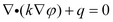
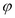
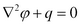
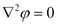
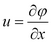
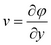
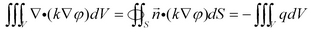
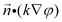

|
Electrostatics |

  
|
|
Electrostatics |
|
Perhaps the most important of all partial differential equations is the simple form
(1.1) 
It is encountered in virtually all branches of science and engineering, and describes the diffusion of a quantity with diffusivity k and volume source q. With k=1 it is referred to as Poisson’s equation, . With k=1 and q=0, it is referred to as Laplace’s equation, .
If is electric potential, k is permittivity and q is charge density, then (1.1) is the electrostatic field equation.
If is temperature, k is thermal conductivity and q is heat source, then (1.1) is the heat equation.
If we identify derivatives of with fluid velocities,
, 
then (1.1) is the potential flow equation.
In most cases, we can identify  with the flux of some quantity such as heat, mass or a chemical. (1.1) then says that the variation of the rate of transfer of the relevant quantity is equal to the local source (or sink) of the quantity.
with the flux of some quantity such as heat, mass or a chemical. (1.1) then says that the variation of the rate of transfer of the relevant quantity is equal to the local source (or sink) of the quantity.
If we integrate the divergence term by parts (or equivalently, apply the divergence theorem), we get
(1.2) 
That is, the total interior source is equal to the net flow across the outer boundary.
In a FlexPDE script, the equation (1.1) is represented simply as
Div(k*grad(phi)) + q = 0
The boundary flow is represented in FlexPDE by the Natural boundary condition,
Natural(phi) = <boundary flux>
The simplest form of the natural boundary condition is the insulating or “no flow“ boundary,
Natural(phi) = 0.
Page url: index.html?chapter_1_electrostatics.html